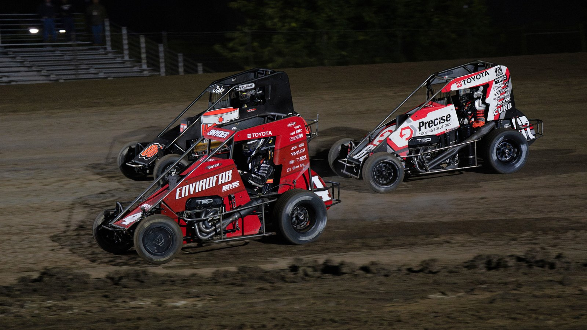

Update: USAC Pushes Merced Midgets to Saturday After Friday Rainout
Wet grounds from heavy rain this week led Merced Speedway to use Friday, Nov. 20, to dry the quarter-mile track. The Chase Johnson Classic will be a Saturday, Nov. 21, tripleheader.

USAC has called off Friday’s Nov. 20 program at Merced Speedway and moved the Chase Johnson Classic to Saturday, Nov. 21, the series announced Nov. 19. Merced Speedway is using the original Friday date to let the facility dry out and get the 1/4-mile track ready for racing on Saturday after heavy rainfall this week, according to USAC.
The Saturday card will now be a tripleheader with complete programs for the USAC NOS Energy Drink Midget National Championship, USCS non-wing sprint cars and 360 winged sprint cars, USAC said. Pits open at 11 a.m. Pacific, grandstands open at 1 p.m. and hot laps begin at 2 p.m., followed by qualifying and racing.
Grandstand admission is $35 for ages 16 and up, $20 for ages 11-15, $10 for ages 6-10 and free for ages 5 and under, according to USAC. Advance tickets are on sale at mercedspeedway.net and will also be sold at the track on race day. The event will be streamed live on FloRacing.
The Golden State Invasion continues Monday, Nov. 23, at Plaza Park Raceway in Visalia, California, then Tuesday, Nov. 24, at Bakersfield Speedway at Kevin Harvick’s Kern Raceway and Saturday, Nov. 28, at Ventura Raceway.